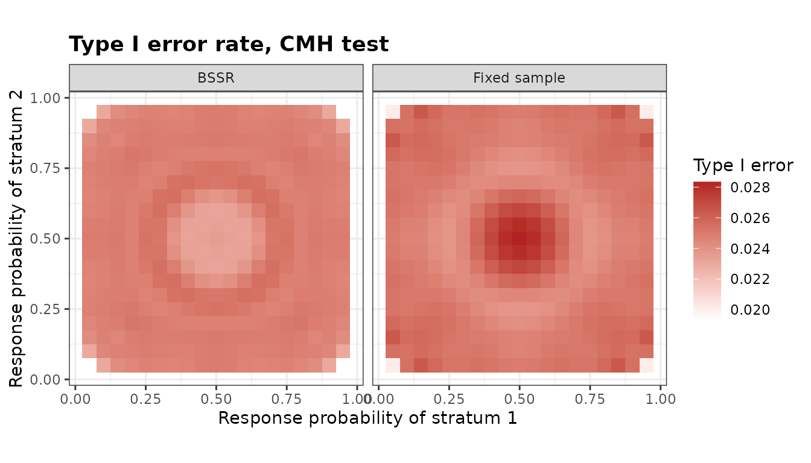

Stratified Designs
Gosuke Homma
2026-10-24
Source:vignettes/bbssr-stratified.Rmd
bbssr-stratified.RmdDesign and notation
A trial is stratified into
strata, for example by centre or by a baseline factor, and stratum
has
patients in group 1 and
in group 2, both fixed by the design. Let
and
be the numbers of responders of the two groups and
the number of responders of the stratum. All tests of the
Strat* functions use
,
the number of responders of group 1 summed over the strata. Given
,
the null expectation of
is
with
,
and each test rejects when
is at most a lower or at least an upper critical value.
The functions follow those for two independent groups:
StratRR(), StratPower() and
StratSampleSize() for the fixed design, and
StratPowerBSSR(), StratBSSR(),
StratTypeIErrorBSSR() and StratAlphaAdjBSSR()
for blinded sample size re-estimation.
Tests
Five stratified tests are available. 'CMH' is the
Cochran-Mantel-Haenszel statistic
with the hypergeometric variance
,
and 'Cochran' is Cochran’s statistic with the binomial
variance
,
the statistic of Woolson et al. (1986). 'CMH-cc' and
'Cochran-cc' reduce
by 0.5 when it is at least 0.5, the continuity correction of
stats::mantelhaen.test(). Nam (1992) reduces
by 0.5 in every outcome; the two corrections reject the same outcomes at
one-sided levels up to 0.078, since an outcome with
has a larger one-sided p-value. 'Strat-Fisher' is the
stratified exact conditional test of Jung (2014), which refers
to its distribution given
,
the convolution of the hypergeometric distributions of the strata. Three
unstratified tests, which analyse the table of totals and ignore the
strata, are available for comparison (see Analyses that ignore the
strata).
Jung (2014, Table 2) analyses the response to thymosin in three strata of patients with bronchogenic carcinoma.
thymosin <- array(c(10, 12, 1, 1, 9, 11, 0, 1, 8, 7, 0, 3), c(2, 2, 3))
p.exact <- stats::mantelhaen.test(thymosin, alternative = 'greater', exact = TRUE)$p.value
p.mh <- stats::mantelhaen.test(thymosin, alternative = 'greater', correct = FALSE)$p.value
round(c(exact = p.exact, mh = p.mh), 4)
#> exact mh
#> 0.1563 0.0760The one-sided p-values 0.1563 and 0.0760 are those of Jung (2014) for
the stratified exact test and the Mantel-Haenszel test, which
'Strat-Fisher' and 'CMH' compute in the same
way. StratRR() lists the critical values of a design for
every vector of stratum totals.
rr <- StratRR(N1 = c(10, 12), N2 = c(10, 12), alpha = 0.025, Test = 'Strat-Fisher')
print(rr, n = 6)
#> Rejection region of a stratified test
#>
#> Test : Strat-Fisher
#> Alternative : greater
#> Group sizes : N1 = (10, 12), N2 = (10, 12)
#> Alpha : 0.025
#> Combinations : 525, of which 457 have a rejected value of S
#>
#> z.S1 z.S2 S.min S.max lower upper
#> 5 0 0 5 NA 5
#> 6 0 0 6 NA 6
#> 7 0 0 7 NA 7
#> 8 0 0 8 NA 7
#> 9 0 0 9 NA 8
#> 10 0 0 10 NA 8
#> ... 451 more rowsPower and sample size
The power is the probability of the rejection region when the numbers of responders are binomial in every group and stratum. It is computed exactly for any number of strata and any response probabilities, so the odds ratio need not be common to the strata. The normal approximation to the total sample size is formula (2.8) of Woolson et al. (1986), and with a continuity correction formula (2.3) of Nam (1992). A design is described by the fractions of the strata and the allocation ratio, and the exact search runs over the total sample size within this family.
p2 <- c(0.3, 0.5)
p1 <- p2 * 2.5 / (1 - p2 + p2 * 2.5)
ss.std <- StratSampleSize(p1, p2, frac = c(0.4, 0.6), alpha = 0.025, tar.power = 0.8,
Test = 'CMH', method = 'standard')
ss.cmh <- StratSampleSize(p1, p2, frac = c(0.4, 0.6), alpha = 0.025, tar.power = 0.8,
Test = 'CMH')
ss.exact <- StratSampleSize(p1, p2, frac = c(0.4, 0.6), alpha = 0.025, tar.power = 0.8,
Test = 'Strat-Fisher')
c(standard = ss.std$N, CMH = ss.cmh$N, exact = ss.exact$N)
#> standard CMH exact
#> 160 164 176With a common odds ratio of 2.5, the normal approximation gives a total of 160 patients, at which the exact power of the CMH test is 0.796. The exact search gives 164 patients for the CMH test and 176 for the stratified exact test, whose conditional control of the type I error rate makes it conservative.
Blinded sample size re-estimation
At an interim analysis the numbers of responders of every stratum can
be counted without unblinding. The blinded estimate of the pooled
response probability of stratum
is
divided by the interim size of the stratum. It is divided between the
groups with the assumed effect Delta.A, common to the
strata on the scale effect, and the total sample size is
re-estimated for these probabilities and divided between the strata as
in the planned design. With two strata the final sizes depend on the
interim data only through
,
and the power is computed exactly by enumeration. With a common odds
ratio the planning probabilities of a stratum whose pooled estimate is
close to 0 or 1 are close to each other, so the examples bound the final
total by twice the planned total with N.max.
plan <- StratSampleSize(p1, p2, frac = c(0.5, 0.5), alpha = 0.025, tar.power = 0.8,
Test = 'CMH', method = 'standard')
pooled <- (p1 + p2) / 2
res <- StratPowerBSSR(p = rbind(pooled, pooled + 0.1), Delta.A = 2.5, Delta.T = 2.5,
N1 = plan$N1, N2 = plan$N2, omega = 0.5, r = 1, alpha = 0.025,
tar.power = 0.8, Test = 'CMH', effect = 'OR',
ss.method = 'standard', N.max = 2 * plan$N)
res
#> Blinded sample size re-estimation for a stratified design
#>
#> Test : CMH
#> Alternative : greater
#> Re-estimation : normal approximation (unrestricted)
#> Planned sizes : (40, 40) and (40, 40)
#> Interim sizes : (20, 20) and (20, 20)
#> Effect : OR, assumed 2.5, true 2.5
#> Alpha : 0.025, target power 0.8
#>
#> p.S1 p.S2 p1.S1 p1.S2 p2.S1 p2.S2 power.BSSR
#> 0.4086207 0.6071429 0.5172414 0.7142857 0.3000000 0.5000000 0.8122
#> 0.5086207 0.7071429 0.6211596 0.7995566 0.3960818 0.6147291 0.8145
#> power.TRAD E.N
#> 0.7963 166.43
#> 0.7821 175.75When the pooled response probabilities are those of the planning (the first row), the power of the re-estimation design is 0.812 with an expected total of 166.4. When they are 0.1 higher in both strata, the re-estimation adjusts the sample size and the power is 0.814, while that of the fixed design is 0.782.
Type I error rate
Under the null hypothesis both groups of stratum
respond with the probability
.
Given the interim and the second-stage numbers of responders of a
stratum, the numbers of responders of group 1 are hypergeometric
whatever
,
so with two strata the type I error rate is a polynomial in
.
StratTypeIErrorBSSR() computes its coefficients in the
products of the Bernstein bases of the two strata, evaluates it on a
grid, and certifies its largest value over the rectangle spanned by the
grid: the rectangle is subdivided until the largest coefficient of every
piece exceeds the largest value found by at most
.
tie <- StratTypeIErrorBSSR(Delta.A = 2.5, N1 = c(20, 20), N2 = c(20, 20), omega = 0.5,
r = 1, alpha = 0.025, tar.power = 0.8, Test = 'CMH',
effect = 'OR', ss.method = 'standard', N.max = 160,
theta = seq(0.05, 0.95, by = 0.05))
tie
#> Type I error rate of blinded sample size re-estimation for a stratified design
#>
#> Test : CMH
#> Alternative : greater
#> Planned sizes : (20, 20) and (20, 20)
#> Points : 361
#> Maximum : certified over (theta.S1, theta.S2) in [0.05, 0.95] x [0.05, 0.95]
#> Alpha : 0.025
#>
#> Design theta.S1 theta.S2 TIE bound
#> BSSR 0.3401352 0.3401352 0.0255490 0.0255490
#> Fixed sample 0.5000000 0.5000000 0.0283368 0.0283368
mx <- attr(tie, 'max')The largest type I error rate of the re-estimation design with 20 patients per group and stratum is 0.02555, at (0.340, 0.340), and no rate in the rectangle exceeds 0.02555. That of the fixed design is 0.02834.
plot(tie)
StratAlphaAdjBSSR() lowers the nominal level until the
certified largest rate does not exceed alpha.
adj <- StratAlphaAdjBSSR(Delta.A = 2.5, N1 = c(20, 20), N2 = c(20, 20), omega = 0.5,
r = 1, alpha = 0.025, tar.power = 0.8, Test = 'CMH',
effect = 'OR', ss.method = 'standard', N.max = 160,
theta = seq(0.05, 0.95, by = 0.05))
adj
#> Adjusted significance level for blinded sample size re-estimation
#>
#> Test : CMH
#> Alternative : greater
#> Adjusted part : final analysis only
#> Maximum : certified over (theta.S1, theta.S2) in [0.05, 0.95] x [0.05, 0.95]
#> Target level : 0.025
#>
#> Design max.TIE alpha.adj max.TIE.adj
#> BSSR 0.0255490 0.0245872 0.0248681
#> Fixed sample 0.0283368 0.0228356 0.0246744StratCondRejectBSSR() gives, under the null hypothesis,
the probability of rejection given the pooled numbers of responders of
the strata at the interim analysis and in the second stage. These
probabilities do not depend on
,
and averaging them over the second stage gives the type I error rate
given the interim outcome. Below they are evaluated at the point of the
largest rate found above.
crp <- StratCondRejectBSSR(Delta.A = 2.5, N1 = c(20, 20), N2 = c(20, 20), omega = 0.5,
r = 1, alpha = 0.025, tar.power = 0.8, Test = 'CMH',
effect = 'OR', ss.method = 'standard', N.max = 160,
theta = cbind(mx$theta.S1[1], mx$theta.S2[1]))
#> Warning in data.frame(theta.S1 = pts[p, 1], theta.S2 = pts[p, 2], s1 = map$s1,
#> : row names were found from a short variable and have been discarded
crp
#> Conditional rejection probabilities of blinded sample size re-estimation
#> for a stratified design, under equal response probabilities in every stratum
#>
#> Test : CMH
#> Alternative : greater
#> Planned sizes : (20, 20) and (20, 20)
#> Interim sizes : (10, 10) and (10, 10)
#> Assumed effect : 2.5 (OR)
#> Nominal level : 0.025
#> Interim outcomes : 441 pairs (s1, s2)
#> Above the level : 267496 outcomes for CRP, 762792 for CRP.total
#>
#> Largest conditional rejection probability
#> Quantity value s1 s2 w1 w2
#> CRP 0.06250 1 1 1 1
#> CRP.total 0.06093 1 0 1 2
#>
#> Type I error rate over 1 point: largest 0.02555 at theta = (0.340135, 0.340135)
by.s <- attr(crp, 'by.s')
head(by.s[order(-by.s$contribution), ], 5)
#> theta.S1 theta.S2 s1 s2 prob.s TIE.s contribution
#> 155 0.3401352 0.3401352 7 7 0.03371154 0.02640780 0.0008902478
#> 134 0.3401352 0.3401352 7 6 0.03270032 0.02633070 0.0008610225
#> 154 0.3401352 0.3401352 6 7 0.03270032 0.02633070 0.0008610225
#> 133 0.3401352 0.3401352 6 6 0.03171943 0.02617832 0.0008303614
#> 176 0.3401352 0.3401352 7 8 0.02823765 0.02625803 0.0007414652The contributions of the interim outcomes sum to 0.02555, the largest type I error rate found above.
Analyses that ignore the strata
'Unstrat-Chisq' is Pearson’s chi-squared test of the
table of totals, with
and
patients and
responders, which is the comparison of two proportions with the pooled
variance; 'Unstrat-Chisq-cc' adds the continuity
correction, and 'Unstrat-Fisher' is Fisher’s exact test of
that table. Their critical values depend on
only through
,
but their power and type I error rate are computed with the response
probabilities of each stratum. An unstratified test controls the level
when the strata are distributed alike in the two groups, and its level
can be distorted otherwise (Nam, 1992; Jung, 2014). In the next design
group 1 holds a third of the first stratum, whose patients respond
rarely, and three quarters of the second.
th <- rbind(c(0.2, 0.6), c(0.4, 0.4))
lev <- sapply(c('CMH', 'Strat-Fisher', 'Unstrat-Chisq', 'Unstrat-Fisher'), function(Test) {
StratPower(th, th, N1 = c(20, 60), N2 = c(40, 20), alpha = 0.025, Test = Test)$Power
})
rownames(lev) <- c('theta = (0.2, 0.6)', 'theta = (0.4, 0.4)')
round(lev, 4)
#> CMH Strat-Fisher Unstrat-Chisq Unstrat-Fisher
#> theta = (0.2, 0.6) 0.0264 0.0157 0.5090 0.4348
#> theta = (0.4, 0.4) 0.0247 0.0160 0.0247 0.0166With the response probabilities 0.2 and 0.6 in the two strata, the one-sided type I error rate of the unstratified chi-squared test is 0.509 instead of 0.025, because the table of totals compares groups made of different mixtures of the strata. When the strata respond alike, the rate is 0.0247.
The re-estimation can ignore the strata as well: with
ss.strata = 'pooled' the sample size is re-estimated from
the proportion of responders among all the interim patients, used for
every stratum, so the final sizes depend only on the total number of
interim responders. The final analysis is still the test given by
Test.
res.pooled <- StratPowerBSSR(p = rbind(pooled, pooled + 0.1), Delta.A = 2.5,
Delta.T = 2.5, N1 = plan$N1, N2 = plan$N2, omega = 0.5, r = 1,
alpha = 0.025, tar.power = 0.8, Test = 'CMH', effect = 'OR',
ss.method = 'standard', N.max = 2 * plan$N,
ss.strata = 'pooled')
rbind(stratified = res$E.N, pooled = res.pooled$E.N)
#> [,1] [,2]
#> stratified 166.4284 175.7539
#> pooled 157.1181 165.4599The rows give the expected final totals of the two estimates in the two scenarios of the previous section.
Three or more strata
With three or more strata the number of interim outcomes grows as a
product over the strata, and StratPowerBSSR() and
StratTypeIErrorBSSR() estimate the rates of the
re-estimation design by simulation, with the random numbers of R and a
Monte Carlo standard error. The rates of the fixed design remain
exact.
set.seed(1)
q2 <- c(0.2, 0.35, 0.5)
q1 <- q2 * 2.5 / (1 - q2 + q2 * 2.5)
plan3 <- StratSampleSize(q1, q2, frac = c(0.3, 0.3, 0.4), alpha = 0.025,
tar.power = 0.8, Test = 'CMH', method = 'standard')
res3 <- StratPowerBSSR(p = (q1 + q2) / 2, Delta.A = 2.5, Delta.T = 2.5, N1 = plan3$N1,
N2 = plan3$N2, omega = 0.5, r = 1, alpha = 0.025, tar.power = 0.8,
Test = 'CMH', effect = 'OR', ss.method = 'standard',
N.max = 2 * plan3$N, nsim = 2e4)
res3[, c('power.BSSR', 'se.BSSR', 'power.TRAD', 'E.N')]
#> power.BSSR se.BSSR power.TRAD E.N
#> 1 0.82235 0.002702688 0.8033501 175.9536References
Jung SH (2014). Stratified Fisher’s exact test and its sample size calculation. Biometrical Journal, 56(1), 129-140.
Nam J (1992). Sample size determination for case-control studies and the comparison of stratified and unstratified analyses. Biometrics, 48(2), 389-395.
Woolson RF, Bean JA, Rojas PB (1986). Sample size for case-control studies using Cochran’s statistic. Biometrics, 42(4), 927-932.